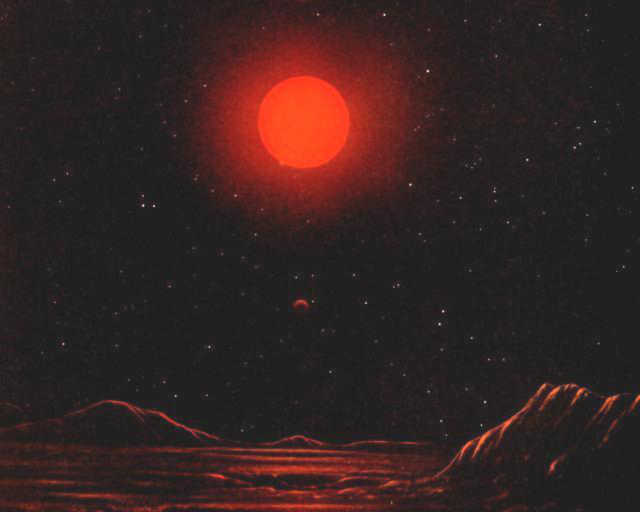

. . . the attack stopped.
The buzzing moved away until it disappeared in the distance.
The giant tried to repair himself, but even his almost infinite capacity for regeneration had declined. A long time would pass till total recovery.
Meanwhile, he dreamt, and he tried to make sense of the Hive.
